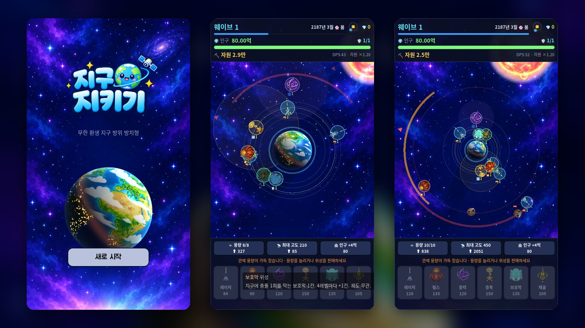

저궤도는 빠르게, 고궤도는 멀리서
공전 속도는 고도에 따라 달라집니다. 낮은 궤도의 위성은 빠르게 돌며 지구 전체를 훑고, 높은 궤도의 위성은 느리지만 먼 곳에서 먼저 요격합니다. 순행·역행·정지 궤도 중에서 고릅니다.

Prototype 01
무한 환생 지구 방위 방치형.
개발 중인 프로토타입 빌드가 새 창에서 열립니다. 세로 화면 기준이며, 내용은 언제든 바뀔 수 있습니다.
Overview
소행성, 우주쓰레기, 혜성, 그리고 외계 모선이 지구를 향해 날아옵니다. 플레이어는 지구 주변 궤도에 위성을 올려 위협을 격추하고, 얻은 자원으로 위성을 강화하고 관제 용량과 고도를 넓혀 갑니다.
위협은 웨이브마다 지수적으로 강해져서 지구는 언젠가 반드시 무너집니다. 인구가 0이 되면 도달한 웨이브만큼 '문명의 기억'을 얻고, 영구 특성을 사서 다음 지구에서 다시 시작합니다.
Key Features
공전 속도는 고도에 따라 달라집니다. 낮은 궤도의 위성은 빠르게 돌며 지구 전체를 훑고, 높은 궤도의 위성은 느리지만 먼 곳에서 먼저 요격합니다. 순행·역행·정지 궤도 중에서 고릅니다.
단일 공격 레이저, 광역 펄스, 감속장을 펴는 중력, 주변 위성을 강화하는 증폭, 충돌을 막는 보호막, 자원을 늘리는 채굴. 같은 궤도에 편대를 짜면 함께 돕니다.
20초마다 웨이브가 오르고 위협이 몰려오는 방향이 바뀝니다. 다음 방향은 미리 예고되고, 10웨이브마다 외계 모선이 보스로 등장합니다.
회차가 끝나면 문명의 기억으로 화력·자원·시작 조건을 올리는 영구 특성 여덟 가지를 삽니다. 자리를 비운 동안의 방치 정산도 있습니다.
Gallery
개발 중인 프로토타입의 실제 화면입니다. 이미지를 누르면 크게 볼 수 있습니다.